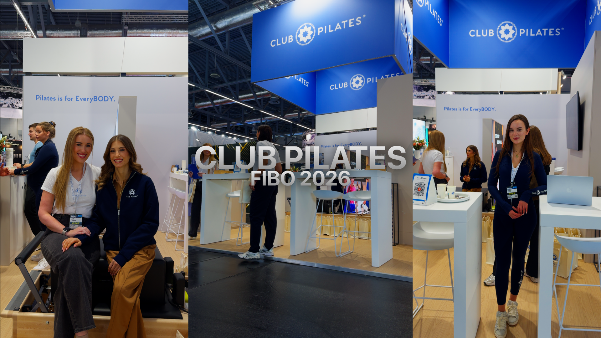
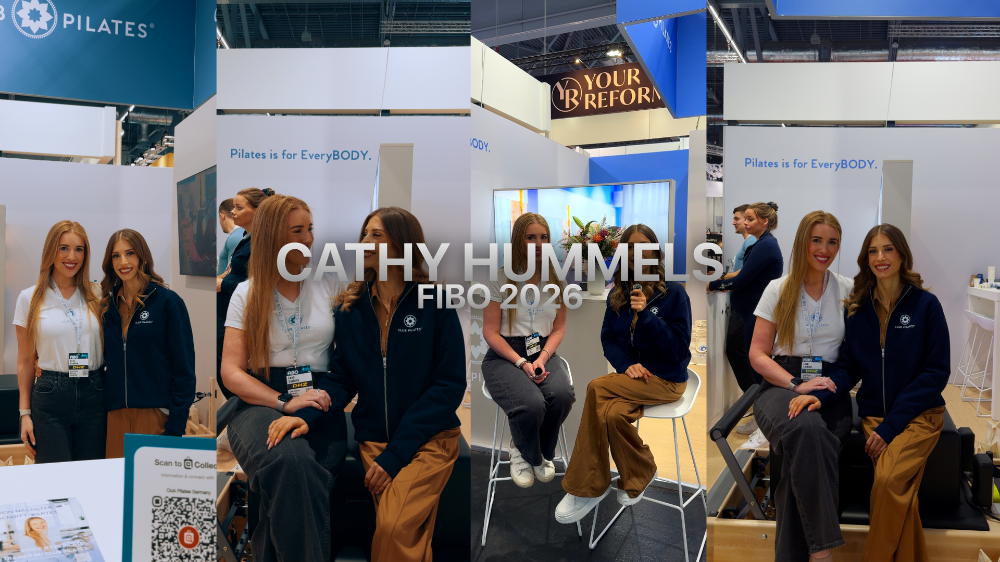
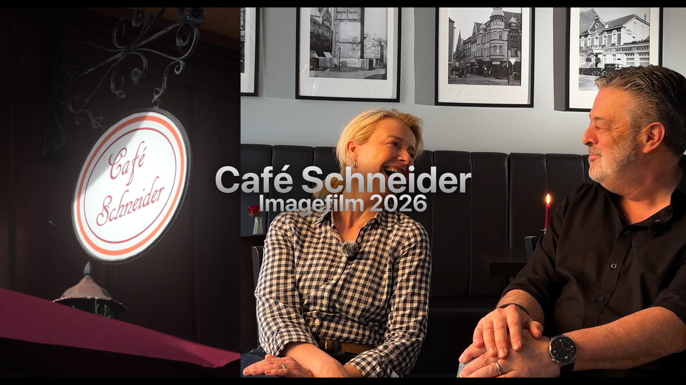
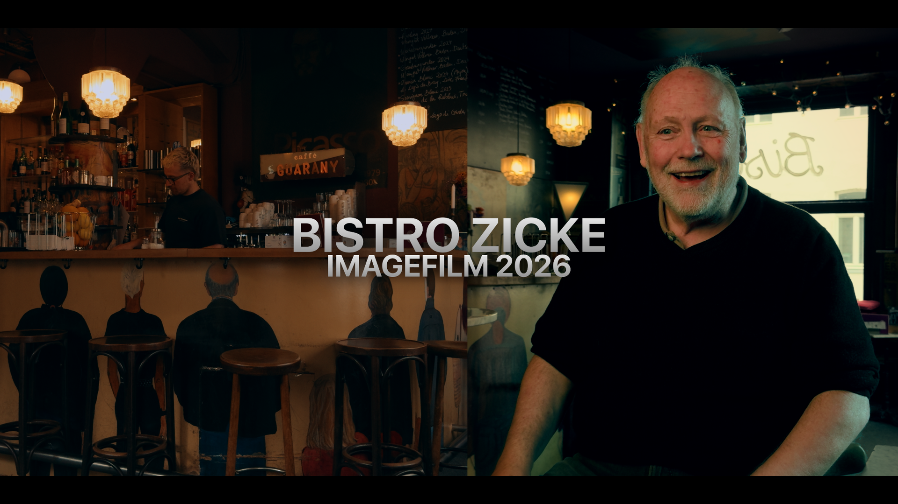
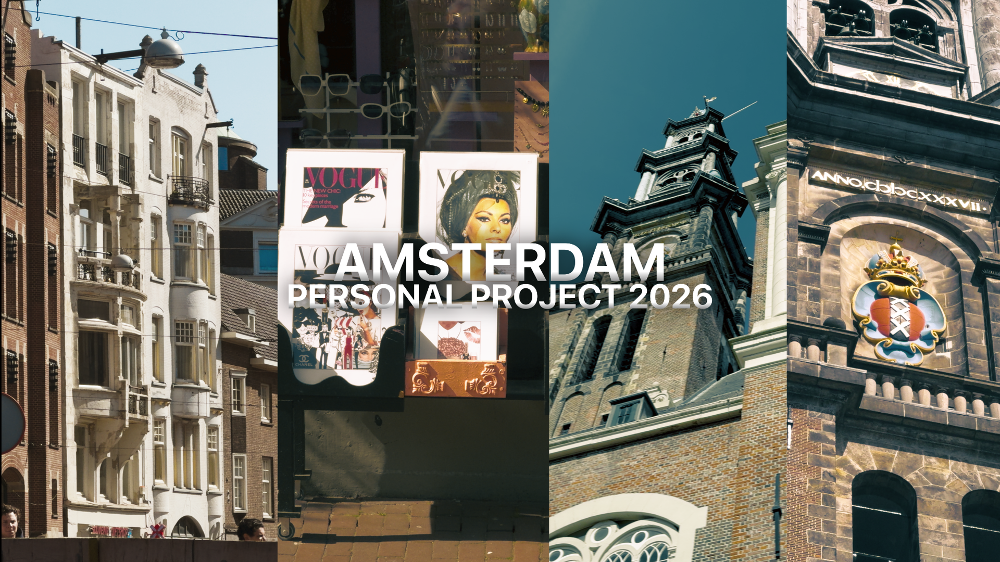

Ausgewählte Arbeiten
Aufträge & persönliche Projekte — bis heute

01
Auftrag · Event · Reel
Videograph auf der Fibo 2026 — Europas größter Fitnessmesse. Reels und Content für Club Pilates und ihre Kooperationspartnerin Cathy Hummels.

02
Auftrag · Interview · Reel
Exklusives Interview und Begleitung von Cathy Hummels auf der Fibo 2026 — cineastisch umgesetzt als Reel.

03
Auftrag · Imagefilm · Interview
Imagefilm für das Café Schneider in Düsseldorf-Benrath. Interview mit dem Inhaber, untermalt mit cineastischen B-Roll Aufnahmen des Cafés.

04
Auftrag · Imagefilm
Cineastischer Imagefilm für das Bistro Zicke in der Düsseldorfer Altstadt — Atmosphäre, Charakter, Gastfreundschaft.

05
Persönlich · Cinematic Travel
Ein persönliches Filmprojekt — Amsterdam, so wie ich es gesehen habe. Ruhig, atmosphärisch, visuell pur.